Mehrwerk ist ein Ort für Reparatur: eine Werkstatt, die rund um die Uhr offensteht, eine Bühne für die Formate der Münchner Reparaturszene und ein Verteiler zu den Initiativen, die es in der Stadt längst gibt. Untergebracht in einem Baukörper, der sich auf- und zuklappen lässt.
Die Paketposthalle scheint dafür gemacht. Ihr Erdgeschoss wird ein frei zugänglicher Stadtplatz ohne Konsumzwang — und in der Bürgerbeteiligung „Alle für die Halle“ standen Repair-Café, DIY-Werkstatt und Bibliothek der Dinge ausdrücklich auf der Wunschliste.
- Gegenstand
- Ein Ort für Reparatur und Produktlanglebigkeit
- Ort
- Paketposthalle München, Erdgeschoss
- Bestand
- Konzept, Gestaltung und Modell vollständig
- Urheber
- Jakob Wankmüller · HfG Schwäbisch Gmünd, 2024
01 Die Idee
verstärken statt konkurrieren · ein Ort statt vieler Adressen
Mehrwerk ist kein weiteres Repair Café. Es ist der Ort, an dem die sichtbar werden, die es schon gibt.
Reparaturangebote gibt es in München längst — Repair Cafés, offene Werkstätten, Initiativen, die das seit Jahren tragen. Das Problem ist nicht das Angebot, es ist die Aufmerksamkeit: Wer nicht ohnehin in der Szene ist, erfährt nie davon.
Mehrwerk ist deshalb zuerst ein Blickfang. Ein Baukörper, der sich sichtbar auf- und zuklappt, mitten im Publikum — ein Ort, an dem Reparatur nicht gesucht werden muss, sondern im Weg steht. Keine zweite Werkstatt, keine Konkurrenz um Ehrenamtliche, kein neues Programm. Sondern Fläche, Technik und ein Publikum für die, die das längst können.
Es geht nicht darum, dass Mehrwerk bekannt wird. Es geht darum, dass Reparieren wieder selbstverständlich wird — hier oder bei einer der Initiativen, die es längst gibt.
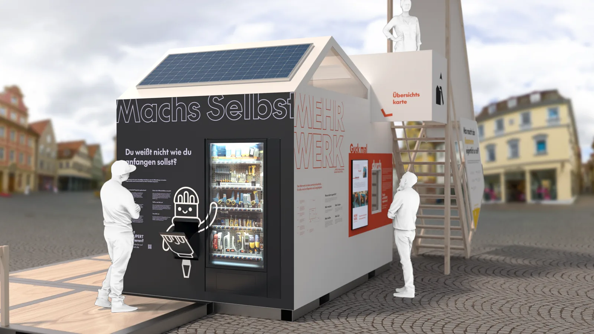
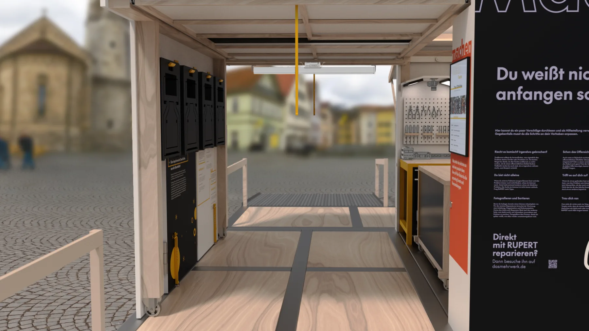
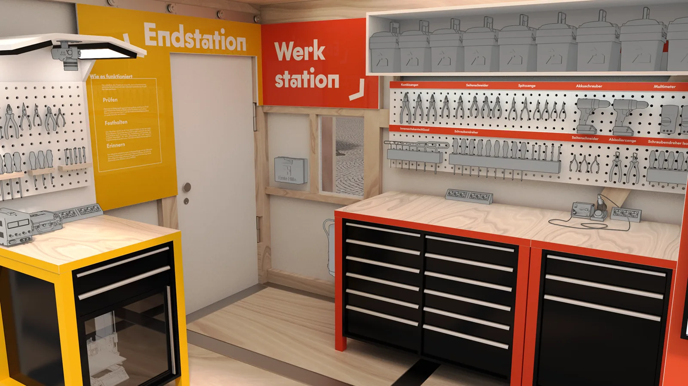
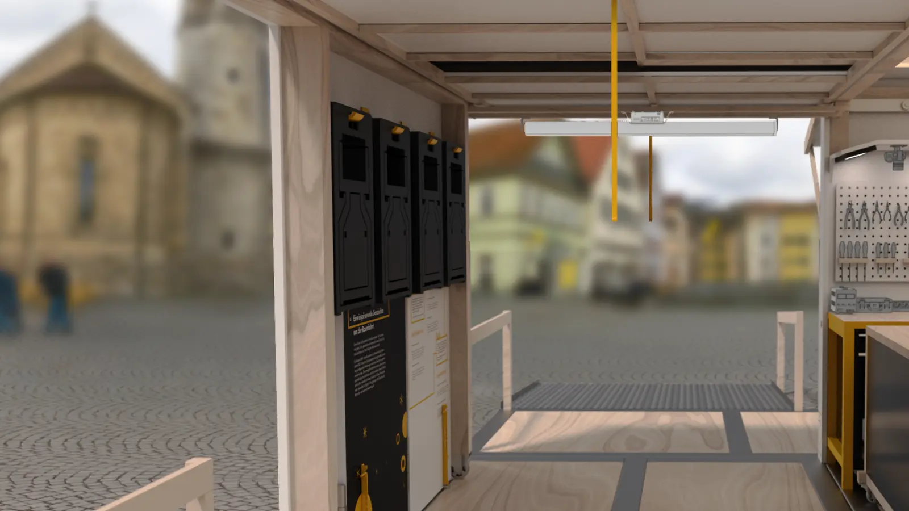
-
01
Auffallen
Der Bau klappt auf und zu. Sichtbar von weitem, ohne Schild.
Der Baukörper -
02
Verstehen
Vier beschriftete Seiten erklären es im Vorbeigehen.
MEHR Events -
03
Mitmachen
Werkstation zum Selbermachen, Automat rund um die Uhr.
MEHR Werkstatt -
04
Weiterleiten
Termine, Formate, Wege zur Szene. Wer mehr will, geht weiter.
MEHR Projekte
02 MEHR Werkstatt
Werkzeug, Platz und Strom, rund um die Uhr, ohne dass jemand aufschließen muss.
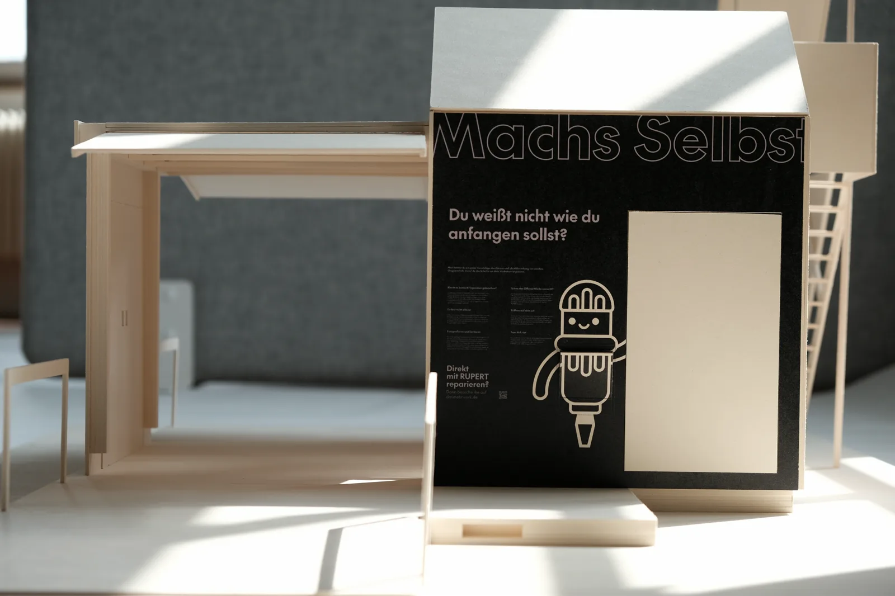
-
02.1
Werkstation
Arbeitsplatz mit Werkzeugwand, Beleuchtung und Strom. Das Werkzeug ist beschriftet, damit auch findet, wer es nicht kennt.
-
02.2
Ausleihe
Werkzeugkästen aus einem Automaten, freigeschaltet über die Chipkarte der Stadtbibliothek. Kein eigenes Konto nötig — die Karte haben viele ohnehin schon.
-
02.3
Innenraum
Zugang möglich wenn man Mitglied ist, voll ausgestattete Werkstatt. Hier sollen man zusammen reparieren können und sich gegensetitig helfen.
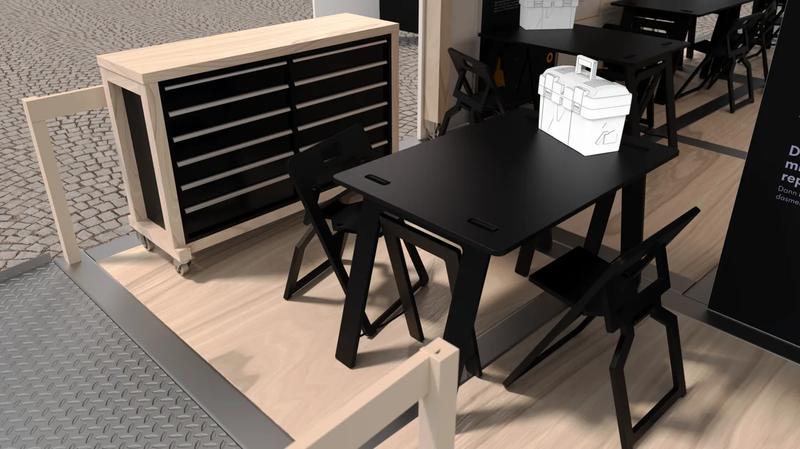
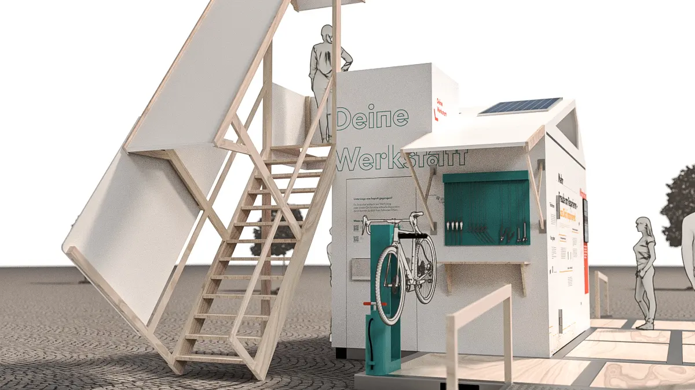
03 MEHR Events
Acht ausformulierte Formate — bespielt von denen, die das ohnehin können.
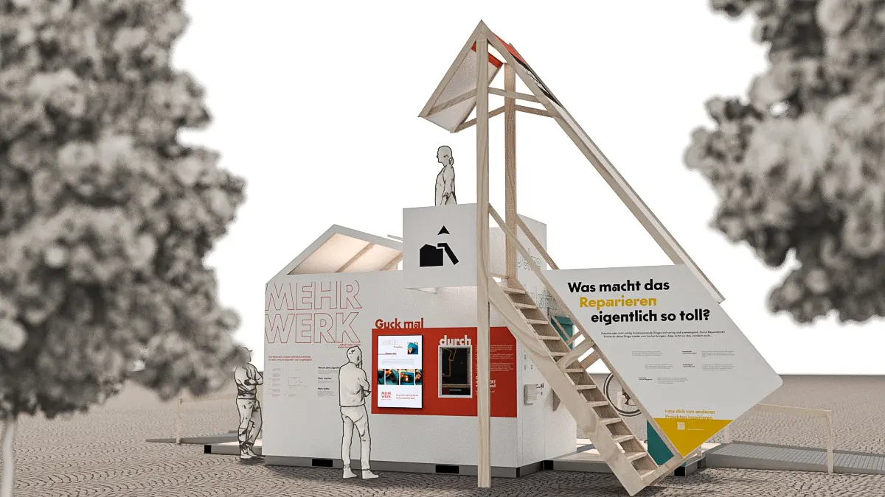
- 03.1Outdoor-Repair-Café
- 03.2Komm vorbei, nimm’s auseinander
- 03.3Lass mich das für dich googlen
- 03.4Upgrade your Workshop
- 03.5Reparieren mit 3D-Druck
- 03.6Kreatives Upcycling
- 03.7Familienwerkstatt
- 03.8Repair-Festival
Offene Formate laufen ohne Anmeldung, vertiefende Kurse mit.
Bespielt wird nicht von Mehrwerk selbst, sondern von den Initiativen, die diese Formate ohnehin veranstalten. Der Ort stellt die Fläche, die Technik und das Publikum.
04 MEHR Projekte
Was hier repariert wird, bleibt sichtbar und führt weiter zu denen, die schon lange helfen.
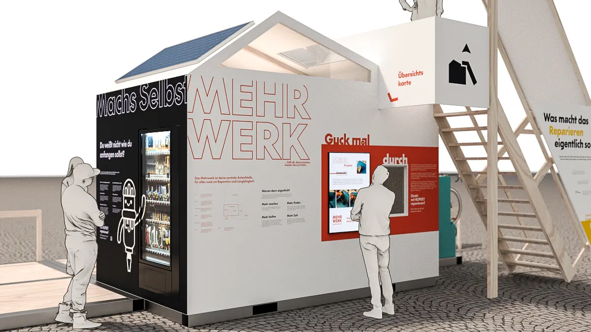
-
04.1
Weiterleiten
Von der eigenen Reparatur zu den Repair Cafés, Werkstätten und Initiativen in der Nachbarschaft. Mehrwerk ist der Verteiler, nicht die Endstation.
-
04.2
Zeigen
Reparierte Dinge und ihre Geschichte. Nicht als Vorher-Nachher, sondern als Beleg, dass es geht.
-
04.3
Endstation
Eien Station zum Angeben und Teilen. Dinge die im Mehrwerk repariert werden sollen hier dokuemntiert werden und schnell auf dasmehrwerk.de hochgeladen werden.
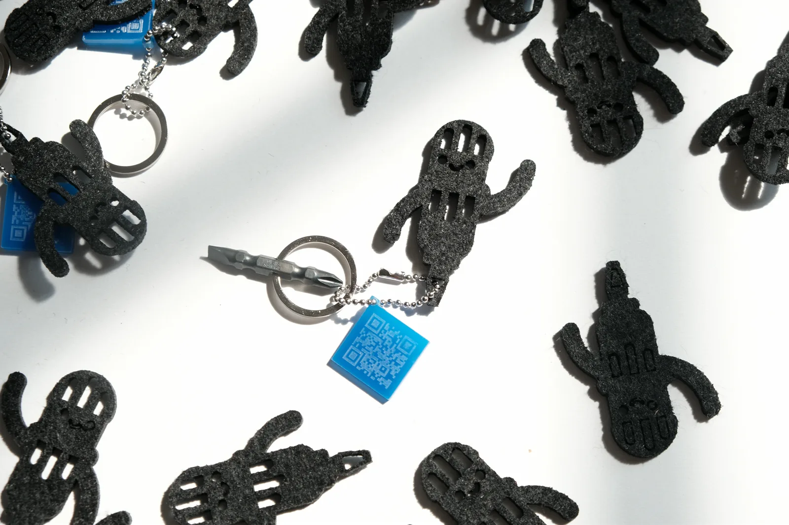
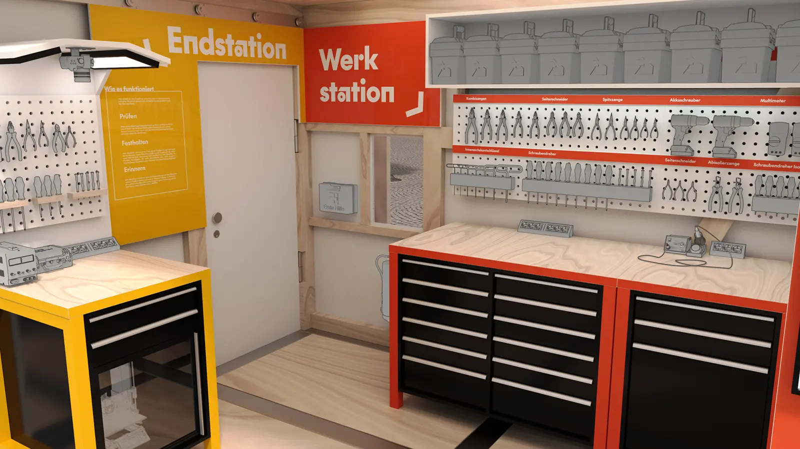
05 Der Baukörper
transformierbar · modular · vorgefertigt · selbsterklärend
Damit das alles auf einer Fläche stattfinden kann, die Mehrwerk nicht allein gehört, ändert der Bau seinen Zustand. Zu ist er kompakt genug, um nachts allein auf einem Platz zu stehen. Auf wird daraus eine Werkstatt mit Vordach, Rampe und überdachter Fläche.
- Transformierbar
- Klappen, Rampe und Tribüne fahren aus. Für ein Festival wird der Bau zur Bühne, danach wieder zur Werkstatt.
- Modular
- Aus vorgefertigten Elementen. Er lässt sich transportieren, an anderer Stelle aufbauen und im Umfang anpassen.
- Auffällig
- Er sieht aus wie etwas, in das man hineingeht. Das ist keine Kosmetik, sondern die Voraussetzung dafür, dass jemand stehen bleibt.
- Selbsterklärend
- Die Außenflächen tragen die Anleitung. Wer davorsteht, weiß ohne Personal, was drin passiert und wie man mitmacht.
-
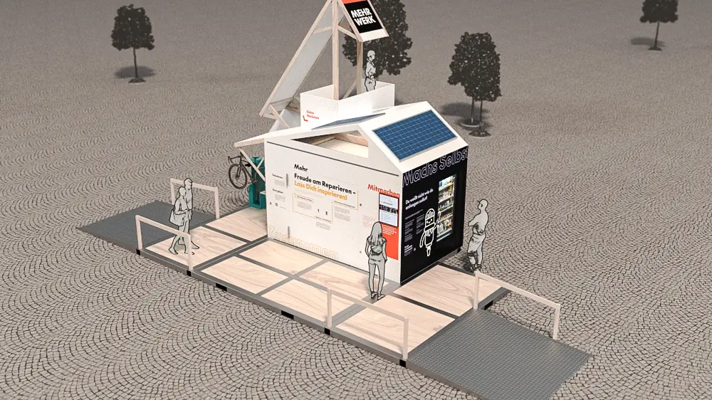
01/ 08
Geschlossen
Außerhalb der Betriebszeiten steht Mehrwerk als kompakter Körper da. Die Automatenseite bleibt zugänglich — Werkzeug lässt sich rund um die Uhr ausleihen und zurückgeben. Die Außenflächen erklären auch im geschlossenen Zustand, was hier passiert.
-
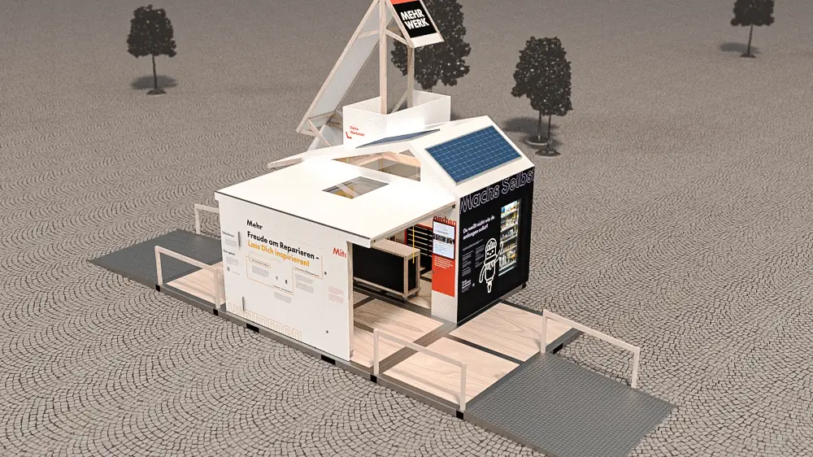
02/ 08
Die Dachklappe hebt sich
Die erste Bewegung geht nach oben. Das Oberlicht bringt Tageslicht auf die Werkbank, die Seitenwand gibt den Innenraum frei — bevor überhaupt eine Fläche nach außen ausgefahren ist.
-
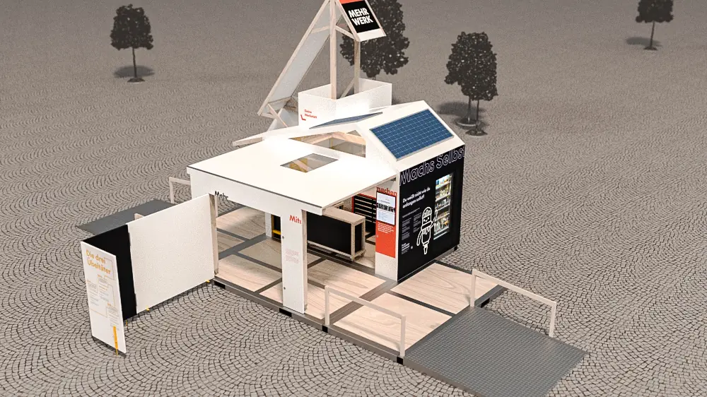
03/ 08
Vordach und Tafel
Die Seitenklappe fährt als Vordach aus und überdacht den Arbeitsbereich. Gleichzeitig schwenkt eine Informationstafel auf: beidseitig beschriftet, wird sie zur Wand des Raums, der gerade entsteht.
-
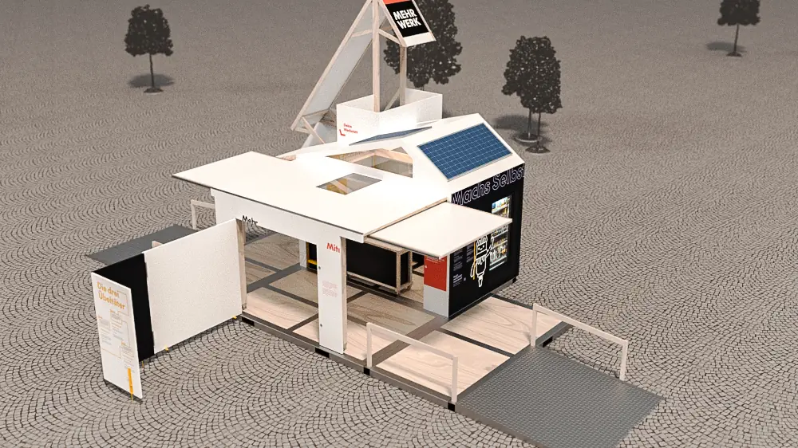
04/ 08
Beide Seiten offen
Mit der zweiten Klappe wird aus dem Körper ein Durchgang. Werkbank und Automat liegen jetzt an einer überdachten Fläche, die man von beiden Seiten betritt. Das ist der Zustand für einen normalen Betriebstag.
-
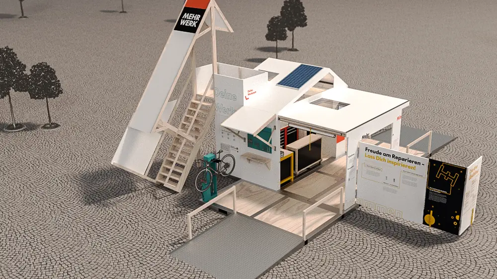
05/ 08
Die andere Seite
Dieselbe Situation von hinten: die Werkstattseite mit Werkbank, Werkzeugwand und Fahrradständer. Die aufgeklappten Tafeln bilden einen Hof, der den Arbeitsplatz gegen den Platz abschirmt, ohne ihn zu verschließen.
-
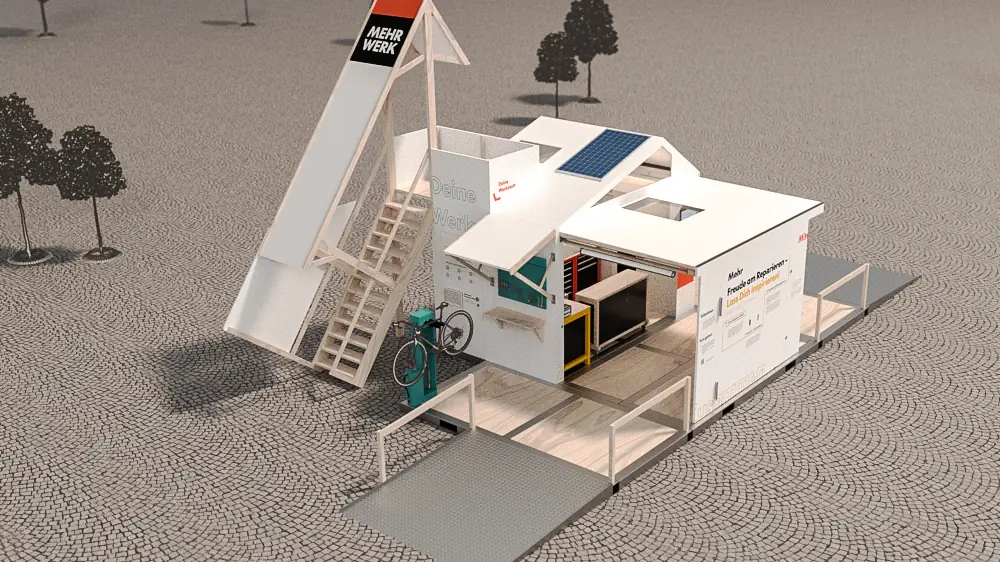
06/ 08
Die Tafeln legen sich an
Der Hof verschwindet zuerst. Das Vordach bleibt, die Werkstatt bleibt bespielbar — nur der geschützte Bereich davor wird wieder zum offenen Platz.
-
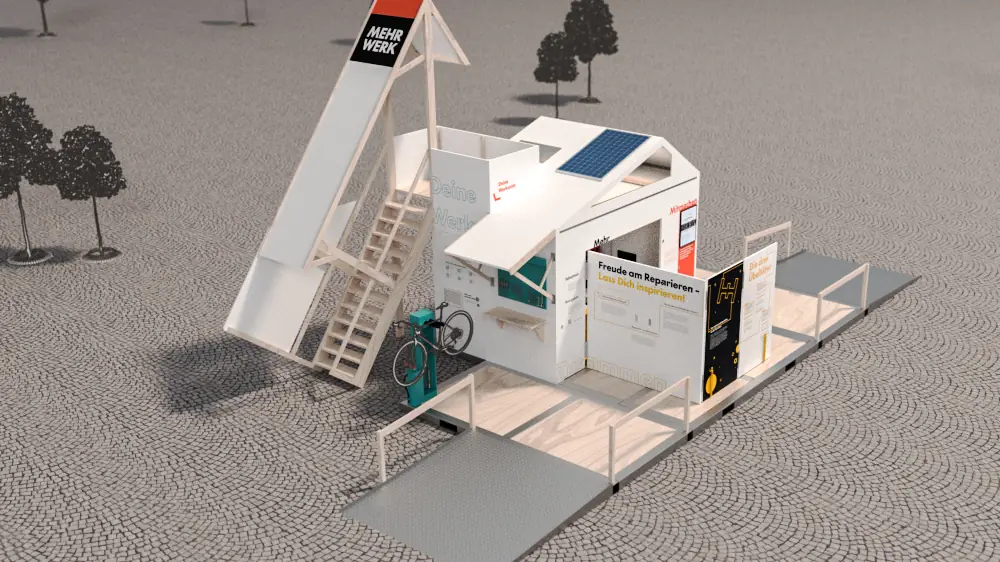
07/ 08
Das Vordach fährt ein
Die Klappen legen sich zurück an den Körper. Was offen bleibt, ist der Zugang zum Automaten und die Rampe — der Teil, der auch nachts funktionieren muss.
-
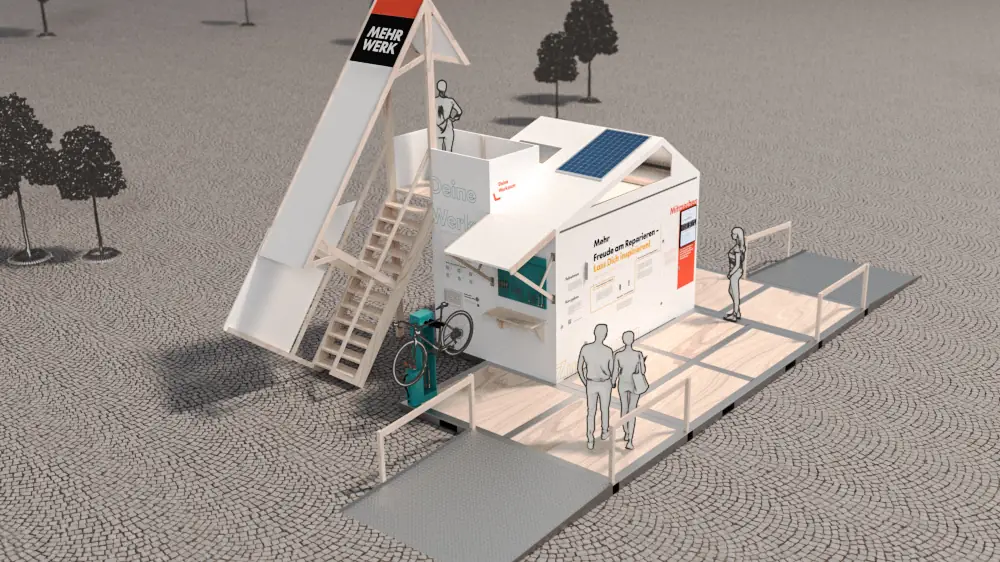
08/ 08
Wieder zu
Am Ende steht wieder der kompakte Körper. Auf- und Zuklappen ist kein Umbau, sondern Teil des täglichen Betriebs — und der Grund, warum Mehrwerk auf einer Fläche stehen kann, die nicht ihm allein gehört.
06 Der Standort
Paketposthalle München · denkmalgeschützt · Erdgeschoss konsumfrei
Die Halle wird zu einem überdachten, öffentlich zugänglichen
Stadtplatz ohne Konsumzwang. Der Satzungsbeschluss vom
26. November 2025 beschreibt das Erdgeschoss als
frei zugänglichen
Raum,
als Freifläche für Erholung, Sport und Spiel, für temporäre
Veranstaltungen sowie als Treffpunkt
.
Mehrwerk passt in diesen Wortlaut, ohne ihn zu dehnen: ein Treffpunkt, dessen Inhalt Reparatur ist. Kein Werkstatteinbau, keine dauerhafte bauliche Änderung.
- 20.000
- Quadratmeter unter einem Dach
- 146
- Meter Spannweite, stützenfrei
- 1.207
- Ideen im Verfahren „Alle für die Halle“
- 19.000
- Menschen haben darüber abgestimmt
Namentlich eingebracht wurden dabei unter anderem
Repair-Café · DIY-Werkstatt · Bibliothek der Dinge · Textil-Upcycling · DIY-Fahrradwerkstatt · Werkstätten für Kreative
Wer kümmert sich? Gibt es Patenschaften oder engagierte Gruppen, die sich einbringen?
Darauf ist Mehrwerk eine Antwort.
07 Der Stand
Bestandsaufnahme · Stand 2026
Mehrwerk ist 2024 als Bachelorarbeit an der HfG Schwäbisch Gmünd entstanden — aber nicht als Skizze, sondern als Bauaufgabe. Was fehlt, sind die Dinge, die eine Hochschularbeit nicht liefern kann.
Vorhanden
- Konzept und Dokumentation, 246 Seiten
- Gestaltung vollständig: Bau, Flächen, Beschilderung, Leitsystem
- Maßgenaues 3D-Modell und gebautes Architekturmodell
- Eventportfolio mit acht ausformulierten Formaten
- Ausgewertete Reparaturdaten aus einem Repair Café
- Digitaler Entwurf für Website und Assistent
Offen
- Eine gemeinnützige Organisation als Träger
- Die Zusage einer Fläche
- Finanzierung — Anträge setzen einen Träger voraus
- Flächenprogramm in Quadratmetern
- Personal- und Betriebskonzept
- Haftung und Genehmigungsrecht
Wie es getragen werden soll
- Trägerschaft
- Eine bestehende gemeinnützige Organisation nimmt Mehrwerk unter ihr Dach — kein neuer Verein, der neben den vorhandenen um dieselben Mittel konkurriert.
- Finanzierung
- Über Fördermittel. Für die Trägerorganisation entstehen dadurch keine Kosten; Anträge sind allerdings nur mit einem gemeinnützigen Träger möglich.
- Betrieb
- Bespielt von der Münchner Reparaturszene, nicht von Mehrwerk selbst. Der Ort stellt Fläche, Technik und Publikum.
Die rechte Spalte ist kein Mangel, sondern die Stelle, an der jemand einsteigt. Wer sie füllt, bekommt die linke geschenkt.
08 Kontakt
Lass uns quatschen.
Diese Seite ist die Kurzfassung. Wenn dich das Projekt interessiert — als Organisation, als Initiative, als Nachbarin oder einfach aus Neugier: schreib mir. Konzept, Zahlen, Modell und Gestaltung zeige ich lieber persönlich, und dann auch das, was hier nicht steht.
- Schreiben
- jakob.wankmueller@gmx.net
- Anrufen
- Nummer auf Anfrage — schreib kurz, ich rufe zurück.